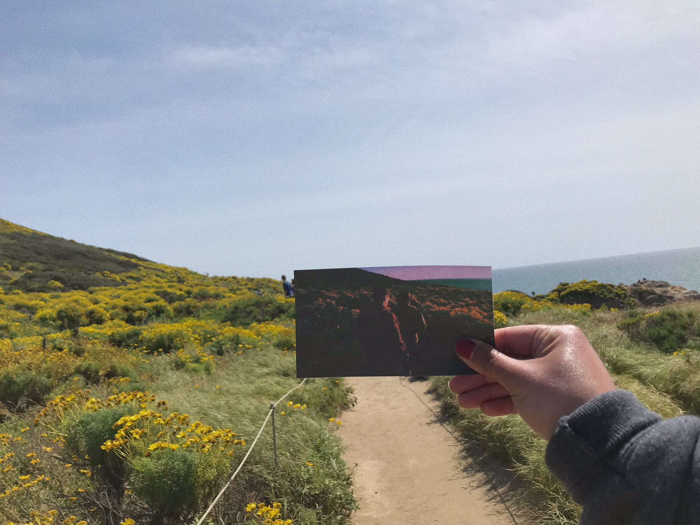

Ratio Monkeys
Blog
Shows
Newsletter
Las letras de TBHC
¿Qué hay detrás de las letras de Tranquility Base Hotel and Casino?
La historia de Cornerstone
En este post vamos a explicar un poco de lo que hay detrás de la canción Cornerstone.
Playlists de Arctic Monkeys
¿Qué artistas prefieren los integrantes de Arctic Monkeys al momento de armar una playlist?
Alex Turner y Alexa Chung
Una triste recapitulación por la historia del noviazgo de Alex Turner y Alexa Chung.
Arctic Monkeys en Argentina
En este post te contamos todo sobre el paso de la banda por Argentina y momentos únicos de sus diferentes shows en el país.

¿Donde se filmó esto?
En este post les mostramos las locaciones elegidas para filmar los videoclips de la banda y curiosidades de las mismas.